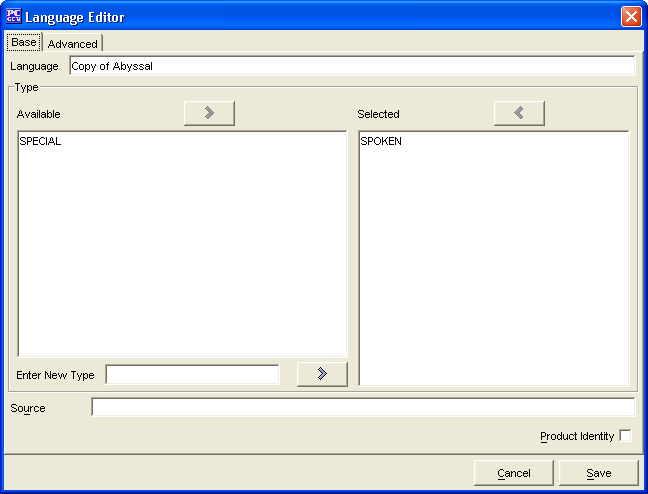

The Base Tab has everything required to make a new Language. The remaining tabs are for more advanced Language creation. The Languages created will be saved into the data/custom directory under the name of customLanguages.lst.
The Language is where you will enter the name for your Language.
The two Type windows, Available and Selected are used to create a list of types of languages.
The Product Identity checkbox is to denote if the Languages's name being created is the Product Identity of a publisher
The Cancel and Save buttons, which appear on every tab, are used to either cancel the Language creation or save it to the customLanguages.lst file.